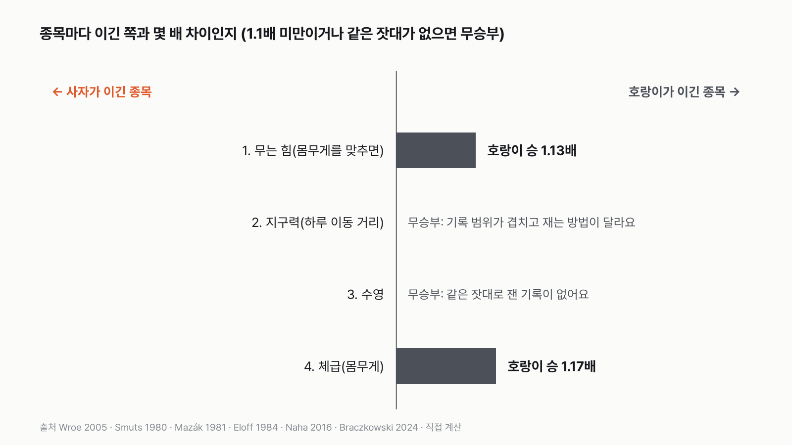
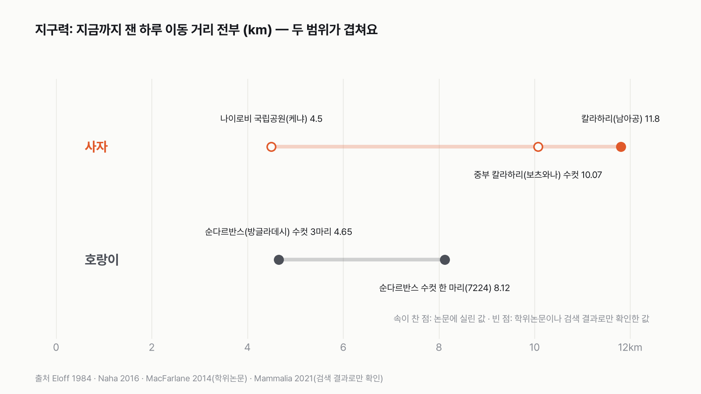
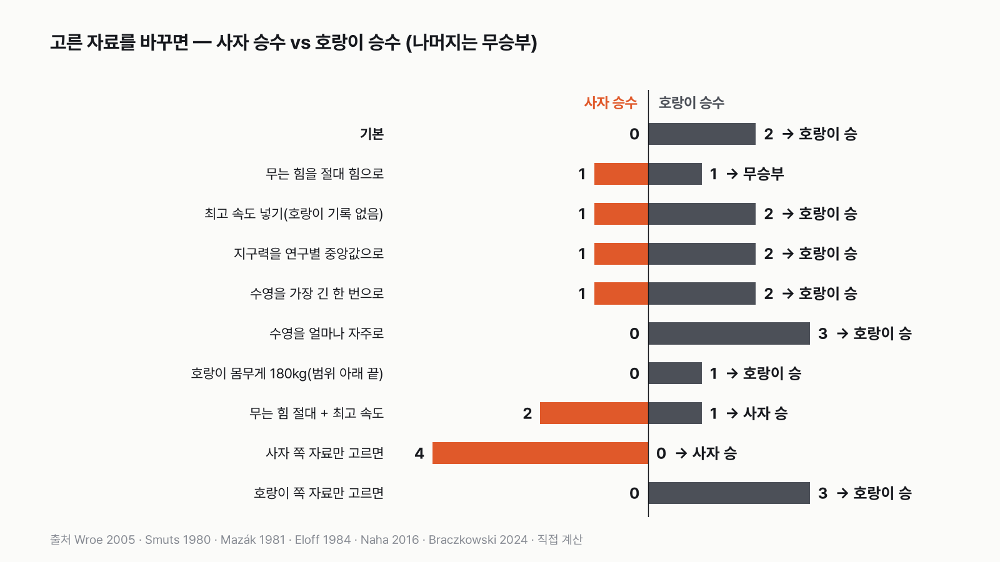
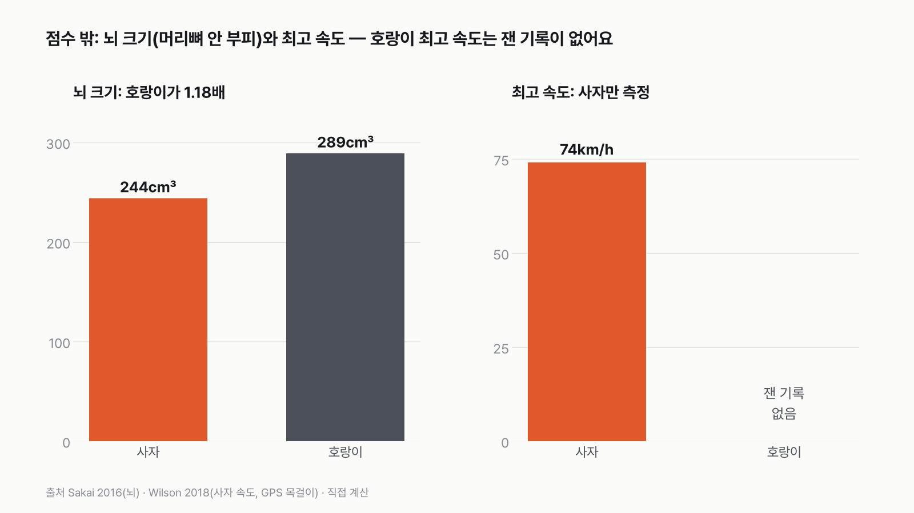

사자 vs 호랑이, 싸움 말고 능력으로 겨루면 누가 이길까
결과를 보기 전에 먼저 골라 주세요. 투표하면 독자 예상과 데이터 결과를 나란히 보여 드려요.
- 사자와 호랑이를 싸우게 하는 대신, 논문에 측정값이 남아 있는 능력으로 겨뤄요.
- 무는 힘, 지구력, 수영, 체급 네 종목이에요. 두 동물 모두 잰 기록이 있는 종목만 골랐어요.
- 누가 더 많은 종목을 가져갈까요? 투표하면 결과가 바로 아래에 열려요.
조건과 규칙
- 대진은 아프리카 사자 수컷 vs 벵골호랑이 수컷이에요. 종목마다 잰 무리는 달라요.
- 아무르호랑이(시베리아호랑이)는 뺐어요. 야생에서 잰 몸무게가 대부분 책에만 있고 논문으로 확인되지 않아서예요.
- 종목은 네 개예요. 무는 힘(몸무게를 맞추면 누가 더 세게 무나), 지구력(하루에 움직인 거리), 수영, 체급(몸무게).
- 최고 속도와 점프는 뺐어요. 두 동물 모두 믿을 만한 측정값이 있어야 종목이 되는데, 이 둘은 한쪽이나 양쪽 기록이 없어요.
독자 투표
사자 vs 호랑이, 싸움 말고 능력으로 겨루면 누가 이길까?
결과 요약
4종목 호랑이 2승 2무 → 최종 호랑이 승
- 호랑이는 무는 힘(몸무게를 맞추면 1.13배)과 체급(1.17배)을 가져갔어요. 둘 다 아슬아슬한 차이예요. 체급의 호랑이 219kg은 잰 평균이 아니라, 논문에 범위(180~258kg)만 있어서 그 가운데를 고른 가정이에요.
- 지구력과 수영은 무승부예요. 두 동물을 같은 잣대로 잰 기록이 없어서, 어느 자료를 고르느냐에 따라 승자가 바뀌어요.
- 결론은 "고른 자료에 따라 갈린다"예요. 사자에게 유리한 자료만 고르면 사자 4승 1무, 호랑이에게 유리한 자료만 고르면 호랑이 3승 1무예요.
그래서? 이 규칙이면 호랑이가 이기지만, 판정을 가른 건 동물보다 자료였어요.
밝혀 둘 점: 처음 짠 다섯 종목에서는 사자가 3승 2패로 이겼어요. 그 결과를 본 뒤 검토에서 '몸 크기를 세 번 셌다', '사는 곳이 다른 기록끼리 붙였다'는 지적을 받고 종목을 다시 짰어요.
독자 예상 vs 데이터 결과
사자 vs 호랑이, 싸움 말고 능력으로 겨루면 누가 이길까?
데이터로 보면 호랑이. 4종목 호랑이 2승 2무예요. 사자에게 유리한 자료만 고르면 사자가 이겨요.


호랑이가 이긴 두 종목은 모두 1.2배가 안 되는 차이예요. 무승부로 둔 두 종목은 고르는 자료에 따라 사자가 이기기도, 호랑이가 이기기도 해요.
| 종목 | 사자 | 호랑이 | 승자 |
|---|---|---|---|
| 1. 무는 힘(몸무게를 맞추면) | 1 | 1.13배 | 호랑이(1.13배) |
| 2. 지구력(하루 이동 거리) | 4.5~11.8km | 4.65~8.12km | 무승부 |
| 3. 수영 | 가장 긴 기록 약 1.1km | 물길을 하루 약 5개 건넘 | 무승부 |
| 4. 체급(몸무게) | 187.5kg | 219kg | 호랑이(1.17배) |
| 최종 | 4종목 호랑이 2승 2무 → 호랑이 승 |
이 규칙과 측정값이면 최종 승자는 호랑이예요. 다만 처음 짠 규칙에서는 사자가 이겼어요. 검토에서 '몸 크기를 세 번 셌다', '사는 곳이 다른 기록끼리 붙였다'는 지적을 받고 종목을 다시 짰더니 결과가 뒤집혔어요. 그 과정까지 그대로 적었어요.
1종목 무는 힘: 호랑이 승(1.13배)
무는 힘은 박물관 두개골의 크기와 턱 근육이 붙는 자리로 계산한 값이에요. 살아 있는 동물이 문 힘을 잰 건 아니에요. 같은 방법으로 여러 육식동물을 계산한 논문이라 두 동물을 나란히 놓기에는 좋아요.
몸무게를 맞추면 호랑이가 1.13배 세게 물어요. 몸집에 견주면 호랑이 턱이 더 센 편이라는 뜻이에요. 그냥 힘으로 재면 사자 두개골이 1.16배 세게 무는데, 이 사자 두개골은 계산상 몸무게가 295kg일 만큼 큰 개체였어요. 몸무게는 4종목에서 따로 겨루니, 무는 힘은 몸무게를 맞춘 쪽으로 쟀어요.
2종목 지구력: 무승부
지구력은 처음에 칼라하리 사막 사자(하룻밤 11.8km)와 순다르반스 맹그로브 숲 호랑이(하루 4.65km)를 붙여 사자가 2.5배로 이겼어요. 그런데 이건 가장 많이 걷는 사자 무리와 가장 적게 걷는 호랑이 무리를 고른 결과였어요. 사자는 발자국을 따라가 잰 거리, 호랑이는 GPS 목걸이 위치를 이은 직선 거리라 재는 방법도 달라요.


그래서 찾은 기록을 전부 놓아 봤어요. 사자는 케냐 나이로비 4.5km부터 칼라하리 11.8km까지, 호랑이는 4.65km부터 8.12km까지예요. 두 범위가 대부분 겹쳐요. 같은 방법(GPS 하루 이동)으로 잰 사자 기록은 학위논문이나 검색 결과로만 확인돼, 논문끼리 맞대어 볼 수 없었어요. 그래서 무승부로 뒀어요. 연구별 값의 가운데를 비교하면 사자가 2.17배로 이겨요(대진에서 뺀 아무르호랑이 기록은 넣지 않았어요).
3종목 수영: 무승부
수영은 의외였어요. 저는 당연히 호랑이가 이길 줄 알았는데, 가장 긴 한 번만 보면 사자 기록이 더 길어요. 2024년 우간다에서 사자 형제가 밤에 바다와 이어진 해협을 건너는 장면이 열화상 드론에 찍혔고, 연구진은 직선으로 약 1.1km라고 계산했어요. 호랑이는 GPS 목걸이를 단 몇 마리 가운데 폭 800m 강을 건넌 게 가장 길어요.
하지만 사자 기록은 한 번 찍힌 장면이고, 호랑이 기록은 목걸이를 단 몇 마리 안에서 나온 가장 긴 값이에요. 같은 잣대가 아니에요. '얼마나 자주'로 재면 순다르반스 호랑이는 물길을 하루에 약 5개 건너고, 사자는 헤엄치는 일 자체가 드물어요. 이 기록 전에 알려진 사자 헤엄은 100m 이하였어요. 기준에 따라 승자가 정반대라서 무승부로 뒀어요.
4종목 체급: 호랑이 승(1.17배)
남아프리카 크루거 국립공원 사자 수컷은 평균 187.5kg이에요(위 속 먹이 무게는 뺐어요). 벵골호랑이 수컷은 동물학 학술지 정리 논문에 180~258kg 범위로만 나와 있어서, 그 가운데인 219kg을 썼어요. 호랑이가 1.17배 무거워요. 범위의 아래 끝 180kg을 쓰면 이 종목은 무승부가 되지만, 최종은 1승 3무로 그대로 호랑이 승이에요.


고른 자료에 따라 갈려요
| 바꾼 것 | 사자 | 호랑이 | 최종 |
|---|---|---|---|
| 기본 | 0승 | 2승 | 호랑이 승 |
| 무는 힘을 그냥 힘으로 | 1승 | 1승 | 무승부 |
| 최고 속도 넣기(호랑이 기록 없어 사자 승) | 1승 | 2승 | 호랑이 승 |
| 지구력을 연구별 가운데 값으로(사자 2.17배) | 1승 | 2승 | 호랑이 승 |
| 수영을 가장 긴 한 번으로 | 1승 | 2승 | 호랑이 승 |
| 무는 힘 그냥 힘 + 최고 속도 | 2승 | 1승 | 사자 승 |
| 사자 쪽 자료만(그냥 무는 힘, 지구력 가운데 값, 수영 가장 긴 한 번, 최고 속도, 호랑이 180kg) | 4승 | 0승(1무) | 사자 승 |
| 호랑이 쪽 자료만(몸무게 맞춘 무는 힘, 수영 빈도, 호랑이 219kg) | 0승 | 3승(1무) | 호랑이 승 |
한 가지만 바꾸면 대부분 호랑이 승이 그대로예요. 무는 힘을 그냥 힘으로 재면 무승부가 되고, 거기에 최고 속도까지 넣으면 사자가 이겨요. 사자에게 유리한 자료를 모두 고르면 4승 1무로 사자가 크게 이겨요. 호랑이의 승리는 '몸무게를 맞춘 무는 힘'과 '몸무게' 두 가지에 기대고 있고, 사자의 역전은 '그냥 무는 힘'과 '속도'에 기대요.
점수 밖


최고 속도는 사자만 잰 기록이 있어요. 보츠와나 야생 사자에게 GPS 목걸이를 달아 달리기를 2,700번 넘게 기록했더니 최고 시속 74km가 나왔어요. 호랑이는 시속 56~65km라는 숫자가 돌지만 1960년대 책의 어림이라 쓰지 않았어요. 넣으면 사자가 1승을 더하지만, 한쪽 기록만 있는 경기라 점수에서 뺐어요.
뇌 크기(머리뼈 안쪽 부피)는 호랑이 289cm³, 사자 244cm³로 호랑이가 1.18배예요. 몸무게 차이와 비슷해요. 뇌가 크다고 더 영리하다고 말할 수는 없어서 종목으로 넣지 않았어요.
두 동물을 재 보니, 승패를 가른 건 이빨이나 다리보다 '누구를 어디서 쟀느냐'였어요. 사자와 호랑이를 같은 들판에 세워 같은 장비로 재는 날이 오기 전까지, 이 질문의 답은 고르는 자료만큼 여러 개예요.
이 숫자는 어디서 왔나요
출처
기준일 논문 값은 2026년 11월 8일에 원문·초록·공개 원자료로 다시 확인했어요. 처음 규칙은 같은 날 계산 전에 정했고, 검토 뒤 같은 날 종목을 다시 짰어요.
Wroe·McHenry·Thomason 2005,Proceedings of the Royal Society B
- 무는 힘doi:10.1098/rspb.2004.2986원본 보기
표 1: 송곳니 무는 힘(사자 1,768N, 호랑이 1,525N), 몸 크기 대비 지수 BFQ(사자 112, 호랑이 127), 두개골 추정 몸무게(사자 294.6kg)
Smuts·Robinson·Whyte 1980,Journal of Zoology
- 사자 몸무게doi:10.1111/j.1469-7998.1980.tb01433.x원본 보기
크루거 수컷 평균 187.5kg
Mazák 1981,Mammalian Species
- 호랑이 몸무게doi:10.2307/3504004원본 보기
벵골호랑이 수컷 180~258kg(표 1)
Naha 외 2016,PLoS ONE
- 호랑이 이동·수영doi:10.1371/journal.pone.0152119원본 보기
수컷 하루 4.65km, 한 마리 8.12km, 800m 강 횡단, 하루 물길 4.8~5.2개
Eloff 1984,Koedoe
- 사자 이동doi:10.4102/koedoe.v27i2.584원본 보기
칼라하리 사자 하룻밤 11.8km(발자국 추적)
MacFarlane 2014 박사논문(호주국립대), Mammalia 2021(doi:10.1515/mammalia-2020-0116)
- 사자 이동(참고)
중부 칼라하리 수컷 하루 10.07km, 나이로비 하루 4.5km
Braczkowski 외 2024,Ecology and Evolution
- 사자 수영doi:10.1002/ece3.11597원본 보기
카징가 해협 약 1.1~1.5km
Wilson 외 2018,Nature
- 사자 최고 속도doi:10.1038/nature25479원본 보기
초속 20.6m(공개 원자료로 다시 계산)
Sakai 외 2016,Frontiers in Neuroanatomy
- 뇌 용적doi:10.3389/fnana.2016.00099원본 보기
사자 244, 호랑이 289cm³
어떻게 셌나요
- 대진: 아프리카 사자 vs 벵골호랑이. 종목마다 잰 무리가 달라요. 사자는 크루거(몸무게)·칼라하리(이동)·우간다(수영)·보츠와나(속도), 호랑이는 순다르반스(이동·수영)와 인도 전역(몸무게) 기록이에요.
- 수컷 성체끼리가 원칙이에요. 다만 무는 힘의 두개골과 칼라하리 사자 이동 기록은 성별이 밝혀지지 않았어요.
- 무는 힘: 몸무게를 맞춘 무는 힘(육식동물 평균을 100으로 놓은 점수)으로 겨뤘어요. 그냥 힘은 민감도로만 봤어요.
- 지구력·수영: 사는 곳에 크게 좌우되는 종목이라, 같은 방법으로 잰 논문 값끼리 비교할 수 있을 때만 승패를 내기로 했어요. 지금 자료로는 둘 다 맞출 수 없어 무승부예요.
- 체급: 사자는 크루거 수컷 평균, 호랑이는 벵골 수컷 범위 180~258kg의 가운데 값이에요.
- 판정: 종목마다 큰 쪽이 이겨요. 두 값의 차이가 1.1배 미만이면 무승부예요. 이긴 종목 수가 많은 쪽이 최종 승자예요.
한계 8가지
이 데이터로 말할 수 없는 것
- 무는 힘은 두개골로 계산한 추정값이고, 두개골의 성별·아종이 밝혀지지 않았어요.
- 사자 몸무게는 초록의 평균만 확인했어요. 호랑이 몸무게는 평균 없이 범위만 있어요. 네팔 치트완에서 잡아서 잰 호랑이 수컷 7마리 평균(221~235kg)은 다른 글에 인용된 값으로만 확인돼 판정에 쓰지 않았어요. 써도 호랑이 승은 그대로예요.
- 지구력 참고 기록 둘(중부 칼라하리, 나이로비)은 학위논문이나 검색 결과로만 확인한 값이에요. 아무르호랑이 기록(하루 6.6km, 석사논문)은 대진에서 뺐으니 넣지 않았어요.
- 몸무게를 맞춘 무는 힘에 쓴 몸무게도 두개골로 추정한 값이에요(사자 294.6kg, 호랑이 186.9kg). 실제 몸무게와 다를 수 있어요.
- 체급에는 '같은 방법으로 잰 값끼리' 규칙을 쓰지 않았어요. 몸무게는 어디서 재든 저울로 재는 같은 방법이라 방법 차이가 없어서예요. 다만 잰 무리가 달라서(크루거 사자, 인도 전역 호랑이) 호랑이 범위의 아래 끝 값으로 민감도를 봤어요(180kg이면 이 종목은 무승부).
- 사자 최고 속도는 측정한 사자의 성별이 원자료에 없어요.
- 점프는 두 동물 모두 측정 논문을 찾지 못했어요.
- 이 비교는 측정된 능력 비교예요. 실제로 마주쳤을 때 어떻게 될지는 말해 주지 않아요.
새 글 나오면 받아 보기
피드 리더 앱에 이 사이트 주소를 한 번 넣어 두면, 새 글이 올라올 때 앱에 떠요. 가입이나 메일 주소는 필요 없어요.
받는 법 보기
- 피드 리더 앱을 하나 골라요. 새 글을 모아 보여 주는 앱이에요. 예를 들면 Feedly나 Inoreader가 있어요. 둘 다 무료고 웹·휴대폰에서 써요.
- 앱에서 '구독 추가'(+)를 누르고 아래 주소를 붙여 넣어요.
- 끝이에요. 새 글이 올라오면 앱 목록에 떠요.
https://protofu.github.io/opendata-insight/feed.xmlFeedly를 쓴다면 여기를 눌러 바로 추가할 수도 있어요.